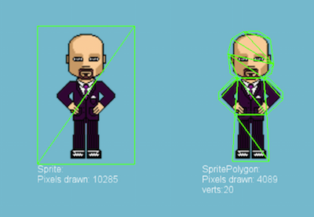

2. 浅析Helloword项目
项目结构：C++工程结构
Classes文件夹
存放C++文件，定义游戏的所有文件
Resources文件夹
主要存放 图片、音频、动画、字体等文件Frameworkers
存放库文件，有ios用的 和 cocos2d-x用的库文件，三方文件cocos2d_libs.scodeproj 工程文件
它包含了cocos2d-x引擎的源码,它是以类库的形式引入到了ios的工程里cocos2d-x的声明周期
它的生命周期类似于ios oc开发- applicationDidFinishLaunching 程序启动入口
- applicationDidEnterBackground 程序进入后台
- applicationWillEnterForeground 程序将要进入前台
部分代码含义
auto director = Director::getInstance();
- 导演类 以单例的形式创建和调用
auto glview = director->getOpenGLView();
- 获取opengl视图
- 获取opengl视图
director->setDisplayStats(true); 设置是否显示帧率信息
- GL verts: opengl 中渲染的顶点数
- GL calls: opengl 中渲染的批次
- xx/xx 帧率/ 每帧运行的秒数
director->setAnimationInterval(1.0f / 60); 设置帧率大小。
引擎的默认设置每秒钟60帧，也就是屏幕每秒钟会刷新重绘60次，它基本满足人眼每秒刷新的最高频率的一个完美运行状态，超出60帧，对人的观看 意义不大，感官上基本识别不出来了已经。auto scene = HelloWorld::createScene();
- 创建一个场景对象
director->runWithScene(scene);
- 运行启动场景
getVisiblesize();
- 获取可视区域的大小
getWinSize();
- 获取窗口的大小
场景scene类 它就是一个层的容器 它是抽象出来的一个类
layer类
一个场景中可能会有多个层 或者一个层，先添加的层会在后添加的层的下面
- addChild（Node * child ,int localzOrder, int tag） localzOrder值越大 它的层越靠上，它的默认值是0。 tag是个标记值，可以通过tag获取某个层。
精灵类 sprite
多边形精灵(Polygon Sprite) 也是一个精灵，同样是为了展示一个可以被控制的图像，但是和普通精灵的区别是，普通精灵在绘图处理中被分为了两个三角形，多边形精灵则是被分为了一系列三角形。

注意左右两种情况的不同。
左侧，是一个典型的精灵绘制时的处理，精灵被处理成一个有两个三角形组成的矩形。
右侧，是一个多边形精灵绘制时的处理，精灵被处理成一系列小的三角形。显然可以看到，右侧多边形精灵需要绘制的像素数量比左侧精灵需要的像素数量更 小，但是由于划分了多个三角形出现了更多的顶点，由于在现代的图形处理中，一般绘制定点比绘制像素消耗的性能少。所以多边形精灵的性能更好，实际的测试结果也验证了这一点。
精灵的一些常用属性：
sprite->setRotation(60.0f); //旋转度
sprite->setScaleX(0.5); //缩放比例
sprite->setSkewX(20.0); //倾斜度
sprite->setContentSize(Size(200, 200)); //设置精灵的大小
sprite->setColor(Color3B(200, 150, 200)); //重新设置图片的颜色
sprite->setOpacity(100);//设置精灵的透明度 范围0-25513.action
MoveTo是移动哪个点的位置
auto moveTo = MoveTo::create(2, Vec2(50, 100));
sprinte->runAction(moveTo);
MoveBy是以自己为0点 要移动的距离
auto moveBy = MoveBy::create(4, Vec2(50, 0));
sprinte->runAction(moveBy);